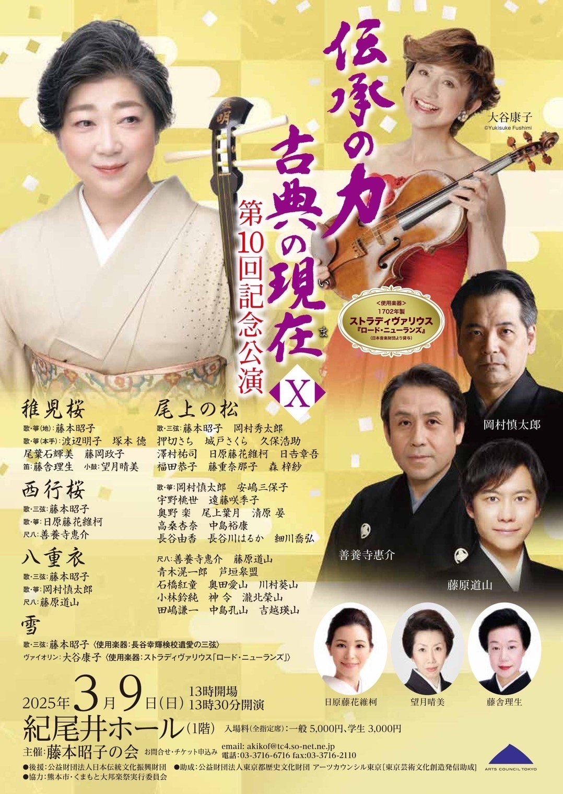

Born in Tokyo in the year 2000. Participated in an experiential workshop hosted by the Setagaya Sankyoku Association and began studying under Harudo Fujii at the age of 9.
Graduated from the Tokyo University of the Arts Music High School and the Department of Traditional Japanese Music (Shakuhachi Major) at the Tokyo University of the Arts. Currently enrolled in the second year of the master's program at the same university.
During studies, received instruction in the Kinko-ryu style from Reibo Aoki III, Komei Takemura, and Yosuke Kawase, and in the Tozan-ryu style from Hozan Nomura and Dozan Fujiwara.
While enrolled,
received the "Ataka Award," "Ryohei Miyata Award," "Doseikai Award," and "Acantus Music Award."
Performed at the "2022 Music University Graduates' Concert" held at the Tokagakudo Music Hall in the Imperial Palace.
Actively performs not only classical pieces but also contemporary Japanese music and pop music, expanding the scope of activities.
Member of the Japan Sankyoku Association, Kinko-ryu Association, Setagaya Sankyoku Association, and Doseikai.
Schedule
Upcoming concerts and workshops are scheduled as follows:
-
February 27-28, 2025 (Thursday & Friday) – Rehearsal / Performance: Open
Close

Waiwai Concert
Time: --- / ---
Venue: Higashihiroshima Arts & Culture Hall Kurara (Small Hall)
-
March 9, 2025: Open
Close
The Power of Tradition – Classical Music Today 10th Anniversary Concert
Time: Doors Open at 17:30 / Performance Starts at 18:30
Venue: Kioi Hall (1st Floor)
Performance History
Here are past performances by Kodo Ishibashi:
- March 2024: Graduated from the Tokyo University of the Arts, Department of Traditional Japanese Music (Shakuhachi Major). Received the "Ataka Award," "Ryohei Miyata Award," "Doseikai Award," and "Acantus Music Award." Performed at the "2022 Music University Graduates' Concert" at Tokagakudo Music Hall in the Imperial Palace.
- June 2023: Performed at Akazutsumi Neighborhood Association event at Tokyo New Church.
- June 2023: Organized and performed at "Nagoshi no Utage" at Hotcake Tsurubamisha.
- September 2023: Founded "Yui no Kai" and held the first independent performance at Nihonbashi Theater.
- October 2023: Performed at the "3rd Rika Oshima Exhibition" at Ikebukuro B Gallery.
- January 2024: Performed as the opening and background music artist for Abema TV's "Seiyuu to Yoru Asobi" New Year Live Broadcast.
- January 2024: Performed in "Shakuhachi Ensemble Aya Formation Live Vol.0" at BAROOM.
- February 2024: Collaborated with TRiECHOES at a gala dinner commemorating the "Takashi Murakami – Mononoke Kyoto" exhibition.
- March 2024: Performed at the unveiling party for "Matsuba Sakura Mon & Modern Sakura Art" at The Peninsula Tokyo (1F Continental Dining).
- April 2024: Hosted a solo performance at Taguma Community Center in Sawara Ward, Fukuoka.
- June 2024: Performed a dedication concert at Hiratsuka Hachimangu Shrine.
- November 2024: Performed at "Hogaku Mirai-zu Concert Vol.10" at Shimosuwa Cultural Center.
- January 2025: Performed as a dedication performance at Hiratsuka Hachimangu Shrine.
- Other performances include appearances at the Tokyo Kasei University Regular Concert, Suginami Sankyoku Association Regular Concert, and Komae Sankyoku Association Regular Concert.
- Additionally, has performed at numerous nursing homes, elementary school performances, weddings, dedication ceremonies, parties, and banquets.